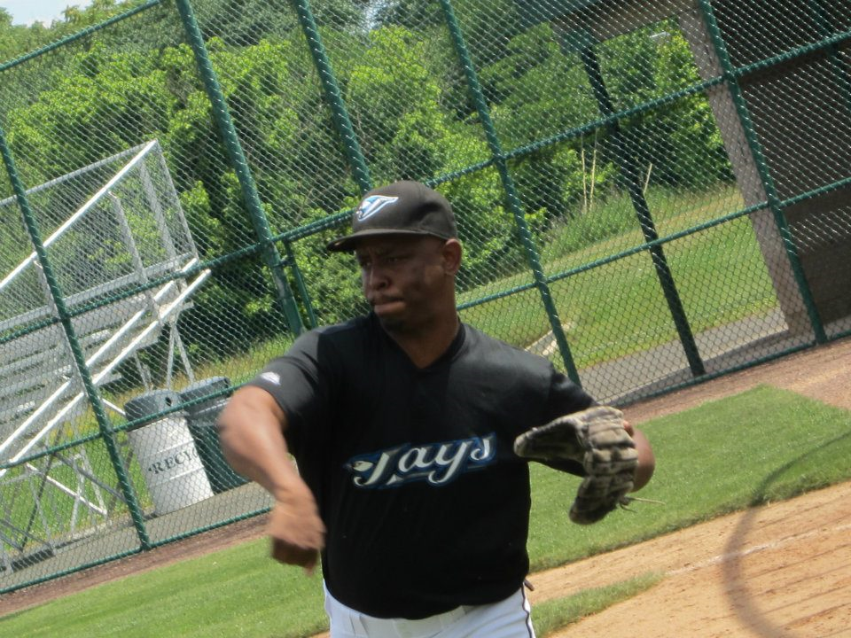

About Me
I was born in Montclair, NJ. As a 90's kid, I grew up playing sports, video games, watching music videos and tons of wrestling during the Attitide Era. I'm a die hard NY Giants, NJ Nets or Brooklyn as they call them today, and Boston Red Sox fan. I'm also an avid NASCAR and F1 racing fan. I've played Semi-Pro Football as a Wide Reciever and Baseball as an Outfielder. I play Basketball with friends and I currently Race NASCAR online competitivley.
I recently got married to my amazing wife and we have a baby due the day after my birthday. I enjoy spending time with family and friends, BBQing, playing drums, Karaoke, and watching TV. As a developer, I hope to gain the skills to create websites and apps that'll help people in their daily lives. I also hope to pass on the knowlege that I have to kids that want to get into web development but may not know how.
Connect With Me